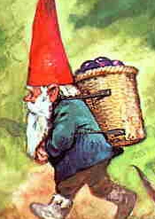

Playable Races > Gnome
A race of diminutive woodland creatures that typically accompany Fey Elves in their settlements. Although they seem servile on the surface and eager to please, gnomes are powerful creatures of their own right and capable of frightening magical feats. They are typically 2-3 feet tall.
Diminutive: Gnomes are too small to use most weapons properly. Non-light one-handed weapons held by them are two-handed, while light weapons aren't considered light.
Lightweight: Gnomes, being the smallest playable race in DUNIA, can be picked up and carried by anyone larger than Half-Foots. They are also completely silent when moving.
Racials: +2 WIS +1 AGI +1 DEX -2 STR -2 CON +4 Search Listen
Health: 1d4 health points per level.
Origin: Gnomes live in the Feywood, though they're liable to feel wanderlust.